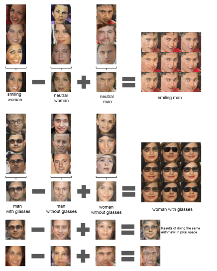
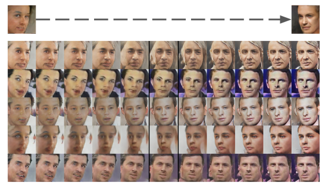

import torch
import torch.utils.data as data
import torch.nn as nn
import torch.nn.functional as F
import torch.optim as optim
from fastai.vision.all import *
import torchvision.datasets as dsets
from torchvision import transformsDCGAN
논문 리뷰
[DCGAN 장점] - 대부분의 상황에서 안정적으로 학습이 됨 - word2vec과 같이 DCGAN으로 학습된 Generator가 벡터 산술 연산이 가능한 성질을 갖음

- DCGAN이 학습한 필터를 시각화하여 보여줌 -> 특정 필터들이 이미지의 특정 물체를 학습했음을 보여줌

- 성능면에서 비지도 학습 알고리즘에 비해 우수함
[APPROACH AND MODEL ARCHITECTURE]
DCGAN은
- Max Pooling To Strided Convolution - Fully-Connected Layer 삭제 - BatchNormalization을 추가함 -> deep한 모델이더라도 gradient의 흐름이 잘 전달됨 - ReLU와 Leaky ReLU를 사용
[DETAILS OF ADVERSARIAL TRAINING]
- 모델 및 옵티마이저

mini-batch Stochastic Gradient Descent(SGD) a with batch size of 128
All weight: zero-centered Normal distribution with std 0.02
Leaky ReLU: slope 0.2
Optimizer: Adam (GAN에서는 momentum 사용)
learning late: 0.0002(0.001은 너무 커서..)
D’s criterion= \(\log(D(x))\)(real data) + \(\log(1 - D(G(x)))\)(fake data)
G’s criterion = \(\log(D(G(z)))\)
- 데이터
- LSUN
- FACES
- IMAGENET-1K
DCGAN에서 중요한 기준 - NOT MIMICKING TRAIN DATA -> 단순히 학습 데이터를 모방하면 안됨! - “Walking in the latent Space” -> G의 input z의 공간인 latent Space에서 z1에서 z2로 살짝 이동한다 하더라도 급작스러운 변화가 일어나지 않고 물흐르듯 부드러운 변화를 보여줘야 한다.

논문 구현
모듈 및 데이터 다운로드
데이터 다운로드
.tgz 파일 압출 풀기
path = untar_data(URLs.PETS)
import tarfile
fname = "C:/Users/default.DESKTOP-HUJV032/.fastai/archive/oxford-iiit-pet.tgz" # 압축 파일을 지정
ap = tarfile.open(fname)
ap.extractall("C:/Users/default.DESKTOP-HUJV032/.fastai/data/oxford-iiit-pet") # 압축 풀기
ap.close() img = PILImage.create("C:/Users/default.DESKTOP-HUJV032/.fastai/data/oxford-iiit-pet/images/havanese_1.jpg")
img- 강아지 고양이 폴더 분류 코드
#파일을 폴더 분류에 맞게 이동
def moveFile(src, dst):
filelist = os.listdir(src)
for file in filelist:
if file[0].isupper():
shutil.copy(os.path.join(src, file), os.path.join(dst, 'cat'))
else:
shutil.copy(os.path.join(src, file), os.path.join(dst, 'dog'))src = "C:/Users/default.DESKTOP-HUJV032/.fastai/data/oxford-iiit-pet/images"
dst = "C:/Users/default.DESKTOP-HUJV032/.fastai/data/oxford-iiit-pet/"
moveFile(src, dst)채널이 1인 이미지 찾기
- 모든 이미지의 채널이 3이어야 에러가 발생하지 않아서 이를 탐색해주어야 함
test = ImageTransform(mean, std)
temp = []
for i in range(4988):
temp.append(test(Image.open(d_list[i])).shape[0])ntemp = pd.DataFrame(temp)
ntemp.columns=['val']
ntemp[ntemp['val']==1]데이터로더 정의(데이터 셋, transform, 파일 경로 리스트 정의)
dog_path = "C:/Users/default.DESKTOP-HUJV032/.fastai/data/oxford-iiit-pet/dog"
dog_list = os.listdir(dog_path)
cat_path = "C:/Users/default.DESKTOP-HUJV032/.fastai/data/oxford-iiit-pet/cat"
cat_list = os.listdir(cat_path)d_list = []
for dog in dog_list:
d_list.append("C:/Users/default.DESKTOP-HUJV032/.fastai/data/oxford-iiit-pet/dog/" + str(dog))
c_list = []
for cat in cat_list:
c_list.append("C:/Users/default.DESKTOP-HUJV032/.fastai/data/oxford-iiit-pet/cat/" + str(cat))class ImageTransform():
"""이미지 전처리 클래스"""
def __init__(self, mean, std):
self.data_transform = transforms.Compose([
transforms.Resize((64,64)),
transforms.ToTensor(),
transforms.Normalize(mean, std)
])
def __call__(self, img):
return self.data_transform(img)class GAN_Img_Dataset(data.Dataset):
"""Dataset 클래스. PyTorch의 Dataset 클래스를 상속"""
def __init__(self, file_list, transform):
self.file_list = file_list
self.transform = transform
def __len__(self):
'''이미지 개수 반환'''
return len(self.file_list)
def __getitem__(self, index):
'''전처리된 이미지를 Tensor 형식 데이터로 변환'''
img_path = self.file_list[index]
img = Image.open(img_path) # [높이][폭]흑백
# 이미지 전처리
img_transformed = self.transform(img)
img_transformed = img_transformed.type(torch.FloatTensor)
return img_transformed# Dataset 작성
mean = (0.5,)
std = (0.5,)
train_dataset = GAN_Img_Dataset(file_list=d_list, transform=ImageTransform(mean, std))
batch_size = 64
train_dataloader = torch.utils.data.DataLoader(train_dataset, batch_size=batch_size, shuffle=True)batch_iterator = iter(train_dataloader) # 반복자로 변환
imges = next(batch_iterator) # 1번째 요소를 꺼낸다
print(imges.size()) # torch.Size([64, 1, 64, 64])torch.Size([64, 3, 64, 64])Generator 및 Discriminator 정의
device = torch.device("cuda:0" if torch.cuda.is_available() else "cpu");devicedevice(type='cuda', index=0)class Generator(nn.Module):
def __init__(self, z_dim = 20, image_size = 64):
super(Generator, self).__init__()
# layer1 -> W(H) * 4
self.layer1 = nn.Sequential(
nn.ConvTranspose2d(z_dim, image_size * 8, kernel_size = 4, stride = 1),
nn.BatchNorm2d(image_size * 8),
nn.ReLU(inplace=True))
# layer2 -> W(H) * 2
self.layer2 = nn.Sequential(
nn.ConvTranspose2d(image_size * 8, image_size * 4, kernel_size = 4, stride = 2, padding=1),
nn.BatchNorm2d(image_size * 4),
nn.ReLU(inplace=True))
self.layer3 = nn.Sequential(
nn.ConvTranspose2d(image_size * 4, image_size * 2, kernel_size = 4, stride = 2, padding=1),
nn.BatchNorm2d(image_size * 2),
nn.ReLU(inplace=True))
self.layer4 = nn.Sequential(
nn.ConvTranspose2d(image_size * 2, image_size, kernel_size = 4, stride = 2, padding=1),
nn.BatchNorm2d(image_size),
nn.ReLU(inplace=True))
self.last = nn.Sequential(
nn.ConvTranspose2d(image_size, 3, kernel_size= 4, stride=2, padding=1), # 흑백 이미지이므로 출력 차원을 1으로 지정한 것
nn.Tanh())
def forward(self, z):
out = self.layer1(z)
out = self.layer2(out)
out = self.layer3(out)
out = self.layer4(out)
out = self.last(out)
out = out.type(torch.FloatTensor)
return outG = Generator(z_dim=20, image_size=64).to(device)class Discriminator(nn.Module):
def __init__(self, z_dim=20, image_size=64):
super(Discriminator, self).__init__()
self.layer1 = nn.Sequential(
nn.Conv2d(3, image_size, kernel_size=4,stride=2, padding=1),
nn.LeakyReLU(0.1, inplace=True))
self.layer2 = nn.Sequential(
nn.Conv2d(image_size, image_size*2, kernel_size=4,stride=2, padding=1),
nn.LeakyReLU(0.1, inplace=True))
self.layer3 = nn.Sequential(
nn.Conv2d(image_size*2, image_size*4, kernel_size=4,stride=2, padding=1),
nn.LeakyReLU(0.1, inplace=True))
self.layer4 = nn.Sequential(
nn.Conv2d(image_size*4, image_size*8, kernel_size=4,stride=2, padding=1),
nn.LeakyReLU(0.1, inplace=True))
self.last = nn.Conv2d(image_size*8, 1, kernel_size=4, stride=1)
def forward(self, x):
out = self.layer1(x)
out = self.layer2(out)
out = self.layer3(out)
out = self.layer4(out)
out = self.last(out)
out = out.type(torch.FloatTensor)
return outD = Discriminator(z_dim=20, image_size=64).to(device)# 네트워크 초기화
def weights_init(m):
classname = m.__class__.__name__
if classname.find('Conv') != -1:
# Conv2dとConvTranspose2d 초기화
nn.init.normal_(m.weight.data, 0.0, 0.02)
nn.init.constant_(m.bias.data, 0)
elif classname.find('BatchNorm') != -1:
# BatchNorm2d 초기화
nn.init.normal_(m.weight.data, 1.0, 0.02)
nn.init.constant_(m.bias.data, 0)
# 초기화 실시
G.apply(weights_init)
D.apply(weights_init)
print("네트워크 초기화 완료")네트워크 초기화 완료모델 훈련
# 모델을 학습시키는 함수를 작성
def train_model(G, D, dataloader, num_epochs):
# GPU가 사용 가능한지 확인
device = torch.device("cuda:0" if torch.cuda.is_available() else "cpu")
print("사용 장치: ", device)
# 최적화 기법 설정
g_lr, d_lr = 0.0001, 0.0004
beta1, beta2 = 0.0, 0.9
g_optimizer = torch.optim.Adam(G.parameters(), g_lr, [beta1, beta2])
d_optimizer = torch.optim.Adam(D.parameters(), d_lr, [beta1, beta2])
# 오차함수 정의
criterion = nn.BCEWithLogitsLoss(reduction='mean')
# 파라미터를 하드코딩
z_dim = 20
mini_batch_size = 64
# 네트워크를 GPU로
G.to(device)
D.to(device)
G.train() # 모델을 훈련 모드로
D.train() # 모델을 훈련 모드로
# 네트워크가 어느 정도 고정되면, 고속화시킨다
torch.backends.cudnn.benchmark = True
num_train_imgs = len(dataloader.dataset)
batch_size = 64
# 반복 카운터 설정
iteration = 1
logs = []
# epoch 루프
for epoch in range(num_epochs):
# 개시 시간을 저장
t_epoch_start = time.time()
epoch_g_loss = 0.0 # epoch의 손실합
epoch_d_loss = 0.0 # epoch의 손실합
print('-------------')
print('Epoch {}/{}'.format(epoch, num_epochs))
print('-------------')
print('(train)')
# 데이터 로더에서 minibatch씩 꺼내는 루프
for imges in dataloader:
# --------------------
# 1. Discriminator 학습
# GPU가 사용 가능하면 GPU로 데이터를 보낸다
imges = imges.to(device)
# 정답 라벨과 가짜 라벨 작성
# epoch의 마지막 반복은 미니 배치 수가 줄어든다
mini_batch_size = imges.size()[0]
label_real = torch.full((mini_batch_size,), 1).to(device)
label_fake = torch.full((mini_batch_size,), 0).to(device)
# 진짜 이미지 판정
d_out_real = D(imges)
# 가짜 이미지 생성해 판정
input_z = torch.randn(mini_batch_size, z_dim).to(device)
input_z = input_z.view(input_z.size(0), input_z.size(1), 1, 1).to(device)
fake_images = G(input_z)
d_out_fake = D(fake_images.to(device))
# 오차를 계산
d_loss_real = criterion(d_out_real.view(-1).to(device), label_real.float())
d_loss_fake = criterion(d_out_fake.view(-1).to(device), label_fake.float())
d_loss = d_loss_real + d_loss_fake
# 역전파
g_optimizer.zero_grad()
d_optimizer.zero_grad()
d_loss.backward()
d_optimizer.step()
# 2. Generator 학습
# --------------------
# 가짜 이미지 생성해 판정
input_z = torch.randn(mini_batch_size, z_dim).to(device)
input_z = input_z.view(input_z.size(0), input_z.size(1), 1, 1).to(device)
fake_images = G(input_z)
d_out_fake = D(fake_images.to(device))
# 오차를 계산
g_loss = criterion(d_out_fake.view(-1).to(device), label_real.float().to(device))
# 역전파
g_optimizer.zero_grad()
d_optimizer.zero_grad()
g_loss.backward()
g_optimizer.step()
# --------------------
# 3. 기록
# --------------------
epoch_d_loss += d_loss.item()
epoch_g_loss += g_loss.item()
iteration += 1
# epoch의 phase별 loss와 정답률
t_epoch_finish = time.time()
print('-------------')
print('epoch {} || Epoch_D_Loss:{:.4f} ||Epoch_G_Loss:{:.4f}'.format(
epoch, epoch_d_loss/batch_size, epoch_g_loss/batch_size))
print('timer: {:.4f} sec.'.format(t_epoch_finish - t_epoch_start))
t_epoch_start = time.time()
return G, Dnum_epochs = 1000
G_update, D_update = train_model(G, D, dataloader=train_dataloader, num_epochs=num_epochs)생성이미지 확인(epoch 1000일 때의 결과)
batch_size = 8
z_dim = 20
fixed_z = torch.randn(batch_size, z_dim)
fixed_z = fixed_z.view(fixed_z.size(0), fixed_z.size(1), 1, 1)
G_update.eval()
fake_images = G_update(fixed_z.to(device))
batch_iterator = iter(train_dataloader) # 반복자로 변환
imges = next(batch_iterator)
# 출력
fig = plt.figure(figsize=(15, 6))
for i in range(0, 5):
# 상단에 훈련 데이터를,
plt.subplot(2, 5, i+1)
plt.imshow(torch.einsum('cij -> ijc', imges[i]).cpu().detach().numpy())
# 하단에 생성 데이터를 표시한다
plt.subplot(2, 5, 5+i+1)
plt.imshow(torch.einsum('cij -> ijc', fake_images[i]).cpu().detach().numpy())Clipping input data to the valid range for imshow with RGB data ([0..1] for floats or [0..255] for integers).
Clipping input data to the valid range for imshow with RGB data ([0..1] for floats or [0..255] for integers).
Clipping input data to the valid range for imshow with RGB data ([0..1] for floats or [0..255] for integers).
Clipping input data to the valid range for imshow with RGB data ([0..1] for floats or [0..255] for integers).
Clipping input data to the valid range for imshow with RGB data ([0..1] for floats or [0..255] for integers).
Clipping input data to the valid range for imshow with RGB data ([0..1] for floats or [0..255] for integers).
Clipping input data to the valid range for imshow with RGB data ([0..1] for floats or [0..255] for integers).
Clipping input data to the valid range for imshow with RGB data ([0..1] for floats or [0..255] for integers).
Clipping input data to the valid range for imshow with RGB data ([0..1] for floats or [0..255] for integers).
Clipping input data to the valid range for imshow with RGB data ([0..1] for floats or [0..255] for integers).